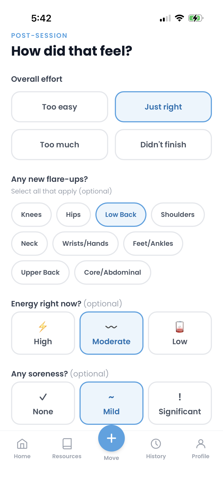
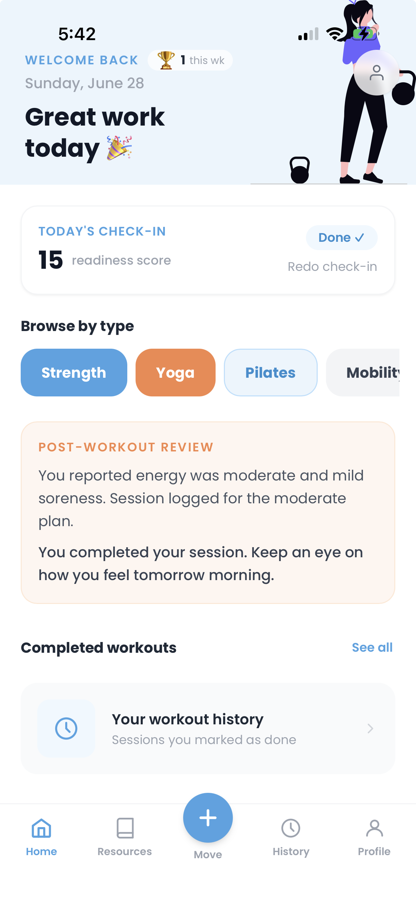

Your day with Second Rise
Under a minute in the morning.
The right workout by the time you finish coffee.
01
Check in
Tell Second Rise how you slept, how you feel, and whether you have 10, 20, 30, or 35+ minutes. Takes under 60 seconds.
02
Get your recommendation
Second Rise combines your goal, check-in, and wearable data to pick the best use of your available time — strength, yoga, mobility, cardio, recovery, or rest.
03
Follow the session
Guided video matched to your body today. When you're done, rate how it felt so the next rec gets smarter.
04
See the pattern
Track how your actual strain compares to the plan over time. Understand what your body is telling you.


